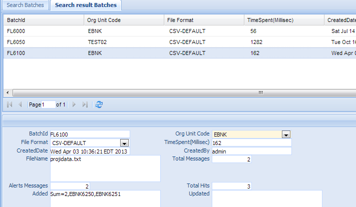

Batches¶
Each File Scan or Customer DBScan is also called a batch. Users upload the file to the system via File Scan, or scan customers via customer dbscan in the screening Management. The screening instance(engine) scans the file or customer table against the sanction list. The system loads the alerts in the watch list alert database, at the same time, it keeps a record for this scan, or batch. This function is used to retrieve those batches.
Click the Batch in the left navigation menu under Screening Management, a new Batch Tab folder will be created in the right panel.
There are 2 sub-Tab folders, Search Batches and Search Result Batches.
Note
There is no Create New or Update/Delete function on Batches.
Search Batches¶
Search Criteria
| Field Name | Description |
|---|---|
| BatchId | This is the unique number for the Batch entry in the system. |
| OrgUnit Code | select a value from the orgunit dropdown list. |
| File Format | The format of the file; Select a value from the dropdown list. Please see File Format for details. |
| CreatedByDate | Date and Time when this entry is created |
| CreatedByUser | User who create this entry. |
| File Name | The name of the file. |
| AND | Select AND radio box if you want those criteria add together. |
| OR | Select OR radio box if you want to get the result if either criteria meet. |
Functional buttons¶
- Find: – click Find button to search.
- Clear:– click Clear button to clear all the criteria.
Search Result Batches¶
The top part is the table, shows the list of the Batches that meet the search criteria. The bottom part is the details of the selected entry. There is no create/update/delete function in Batches.